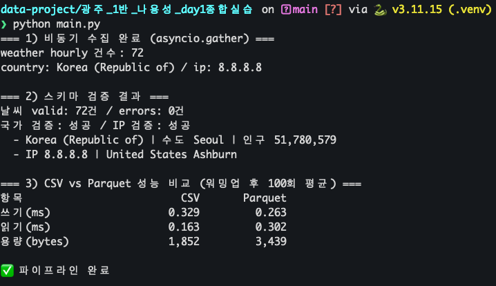
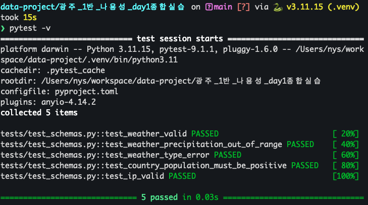
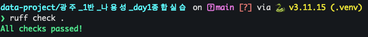
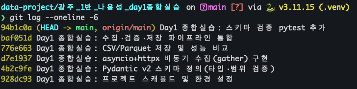

3개 외부 API를 asyncio + httpx로 비동기 동시 수집하고, Pydantic v2로 타입·범위를 검증한 뒤, 검증 통과 데이터를 CSV·Parquet로 저장하며 읽기/쓰기 성능을 비교하는 파이프라인이다.
| 파일 | 역할 |
|---|---|
| collectors.py | asyncio + httpx로 3개 API를 asyncio.gather()로 동시 수집 |
| schemas.py | Pydantic v2 모델 (타입·범위 검증) |
| storage.py | CSV/Parquet 저장 + 읽기/쓰기 성능 측정(워밍업·반복 평균) |
| main.py | 수집→검증→저장 전체 파이프라인 진입점 |
| tests/test_schemas.py | 스키마 검증 pytest (5건) |
사용 API — Open-Meteo(서울 3일 시간대별 기온·강수확률) / countries.dev(한국 국가 정보) / ip-api(IP 지역 정보)



| 항목 | CSV | Parquet | 비교 |
|---|---|---|---|
| 쓰기 (ms) | 0.329 | 0.263 | Parquet 근소 우위 |
| 읽기 (ms) | 0.163 | 0.302 | CSV 근소 우위 |
| 파일 용량 (bytes) | 1,852 | 3,439 | CSV가 작음 |
의미 단위로 6개 커밋을 나누어 개발 과정을 기록했으며, SKALA4-YS/data-project
저장소의 main 브랜치에 반영되어 있다.

① 비동기 수집. asyncio.gather()로 3개 API를 동시 호출해, 순차 호출 시
누적되던 응답 대기시간을 병렬로 겹쳐 전체 대기시간을 단축했다. 세 요청이 서로 독립적이고
네트워크 I/O 바운드이므로 async의 이점이 극대화되는 이상적 사례다.
② Pydantic 검증. dict 직접 접근 대신 모델로 타입·범위(강수확률 0~100, 인구>0 등)를
강제해 잘못된 데이터를 파이프라인 초입에서 차단한다. 실패를 ValidationError로 잡아
valid/errors로 분리하므로, 오염된 데이터가 저장 단계로 전파되지 않는다.
③ CSV vs Parquet. 72행 소규모에서는 쓰기·읽기 모두 1ms 미만이라 실행마다 우열이 바뀌는 노이즈 수준이었고(이번 측정: 쓰기 Parquet·읽기 CSV 근소 우위), 파일 용량은 CSV(1.8KB)가 Parquet(3.4KB)보다 일관되게 작았다. 이는 Parquet의 스키마·메타데이터 고정 오버헤드 때문으로, 컬럼 지향·압축의 진가는 수십만 행 이상 대용량·분석 쿼리에서 드러난다. 즉 소규모엔 CSV, 대규모·분석용엔 Parquet이 합리적이다.
현재 코드는 요구사항을 충족하지만, 실무 견고성 관점에서 아래와 같은 개선 여지가 있다.
| 영역 | 현재 코드의 한계 | 개선 방향 |
|---|---|---|
| 견고성 | gather()가 예외 발생 시 전체를 중단시키고, fetch_json에
네트워크 예외(timeout·5xx) 처리·재시도가 없다. |
return_exceptions=True로 부분 성공 허용, 지수 백오프 재시도 추가 |
| 관측성 | 결과를 print로만 출력해 로그 레벨·타임스탬프·실패 원인 추적이 어렵다. |
표준 logging 전환(레벨·시각·모듈명), 수집 실패 건 구조적 기록 |
| 테스트 | 스키마 5건만 검증하고, 수집·파이프라인(valid/errors 분리) 로직은 테스트가 없다. | httpx.MockTransport로 수집 모킹, 잘못된 행 주입해 분리 로직 검증 |
| 성능측정 | 단일 데이터 규모의 100회 평균만 보고해 편차·규모 의존성이 안 보인다. | 표준편차 병기, 데이터 규모(1e2~1e6행) 스윕, Parquet 압축코덱(snappy·zstd) 비교 |
| 설정관리 | API URL·타임아웃·반복횟수가 코드에 하드코딩되어 있다. | 설정 파일/환경변수/argparse로 분리해 재사용·재현성 향상 |
| 타입안정성 | 런타임 검증만 있고 정적 타입 검사가 없다. | mypy 도입, 모델에 model_config(extra="forbid")로 예상 밖 필드 차단 |
개선 ①: 일부 API 실패에도 파이프라인이 살아남도록 (부분 성공 + 예외 처리)
w, c, ip = await asyncio.gather(
fetch_json(client, WEATHER_URL),
fetch_json(client, COUNTRY_URL),
fetch_json(client, IP_URL),
) # 한 요청이 예외 → 즉시 전파, 전부 실패
results = await asyncio.gather(
fetch_json(client, WEATHER_URL),
fetch_json(client, COUNTRY_URL),
fetch_json(client, IP_URL),
return_exceptions=True,
)
# 예외 객체는 걸러내고 성공한 소스만 후속 처리
ok = [r for r in results
if not isinstance(r, Exception)]
개선 ②: 일시적 네트워크 장애에 대한 재시도(지수 백오프)
async def fetch_json(client, url, retries=3): for attempt in range(retries): try: resp = await client.get(url) resp.raise_for_status() return resp.json() except (httpx.TimeoutException, httpx.HTTPStatusError): if attempt == retries - 1: raise # 마지막 시도 실패 시 예외 전파 await asyncio.sleep(2 ** attempt) # 1s → 2s → 4s 지수 백오프
종합 의견. 이번 실습은 "수집→검증→저장→비교"의 데이터 파이프라인 골격을 async·Pydantic·컬럼형 포맷이라는 실무 요소로 구현했다는 점에서 의미가 있었다. 다만 외부 의존성(네트워크)의 실패를 전제로 한 방어적 설계와 관측성·테스트를 보강하면, 실습 코드에서 실제 운영 가능한 파이프라인으로 발전시킬 수 있다고 판단한다.